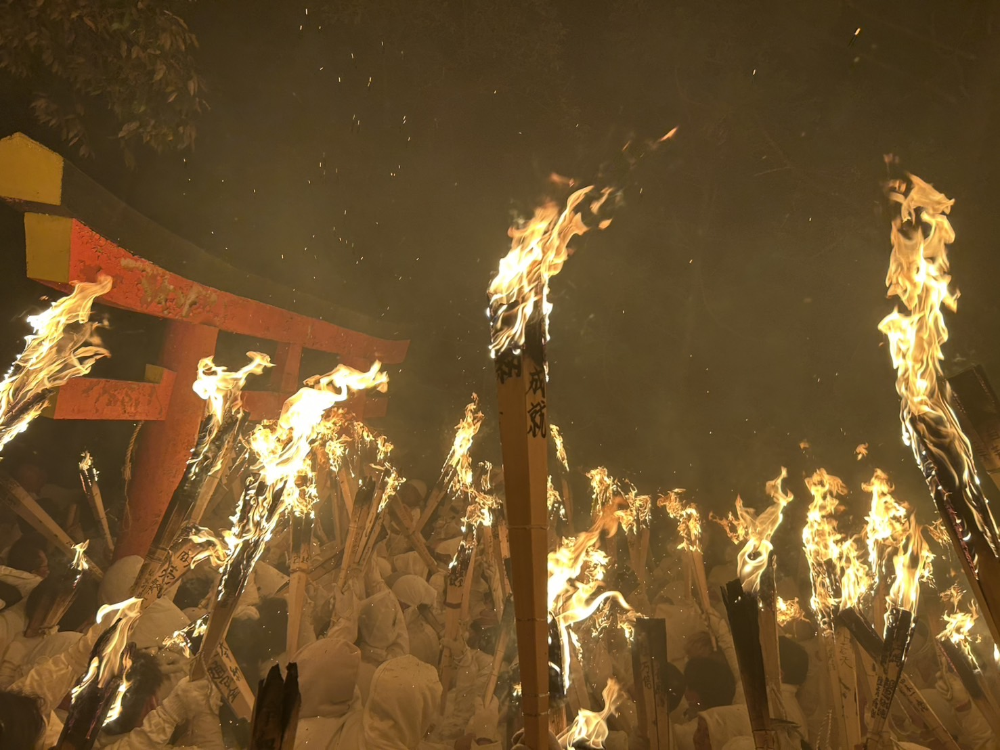
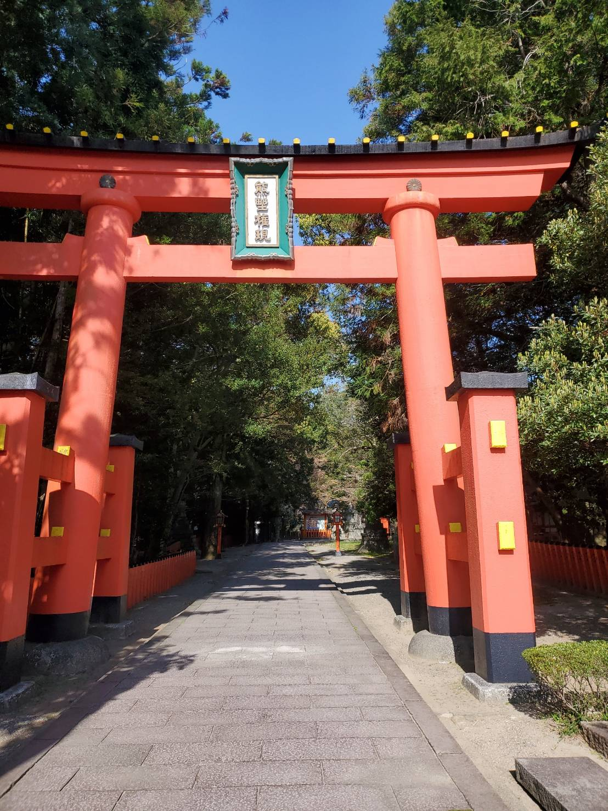

01
概要 / Outline
火を手に、石段を駆け下りる祭り。
御燈祭は、毎年二月六日の夜に神倉神社で行われる火祭りです。
白装束に荒縄を巻いた男たちが、燃える松明を手に538段の石段を駆け下ります。山がひとすじの火の流れになり、街の灯りと混じり合います。
「上り子（のぼりこ）」と呼ばれる参加者は、祭りの一週間前から白い物だけを食べる精進潔斎を経て、当日を迎えます。

熊野古道KURAの目の前、神倉神社の石段が舞台となる火祭りです。
毎年二月六日の夜に行われます。
御燈祭は、毎年二月六日の夜に神倉神社で行われる火祭りです。
白装束に荒縄を巻いた男たちが、燃える松明を手に538段の石段を駆け下ります。山がひとすじの火の流れになり、街の灯りと混じり合います。
御燈祭は神倉神社の例祭で、千四百年以上の歴史を持つと伝えられています。
神武天皇の東征神話に由来する古い祭りで、二〇一六年には国の重要無形民俗文化財に指定されました。新宮の地に根ざした、現役の民俗行事です。
国指定 重要無形民俗文化財（二〇一六年三月指定） / Designated as an Important Intangible Folk Cultural Property of Japan in March 2016.
見学は自由です。鳥居の外から、火の列が石段を下っていく様子をご覧いただけます。
参加できるのは男性のみで、一週間前から白い物のみを食す精進潔斎が必要です。二〇二五年は約一千五百八十名の上り子が参加しました。

御燈祭の舞台になる神倉神社の石段は、熊野古道KURAのすぐ目の前にあります。
祭りのあと、白装束のまま参加者が街へ戻ってくる時間帯まで、宿の窓から街の様子を眺めていただけます。
二月六日前後のご宿泊は、例年お問い合わせが集中いたします。お早めにご相談ください。
二月のご予約・お問い合わせ Reserve for February装飾ではなく、史実と当日の規模をそのまま記します。